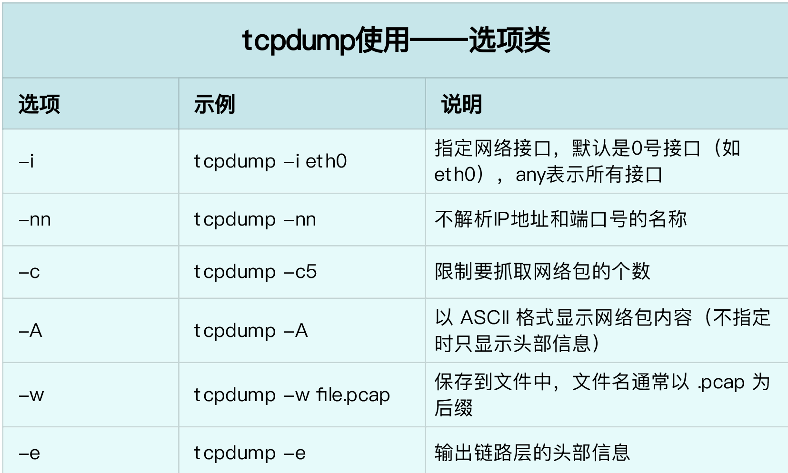
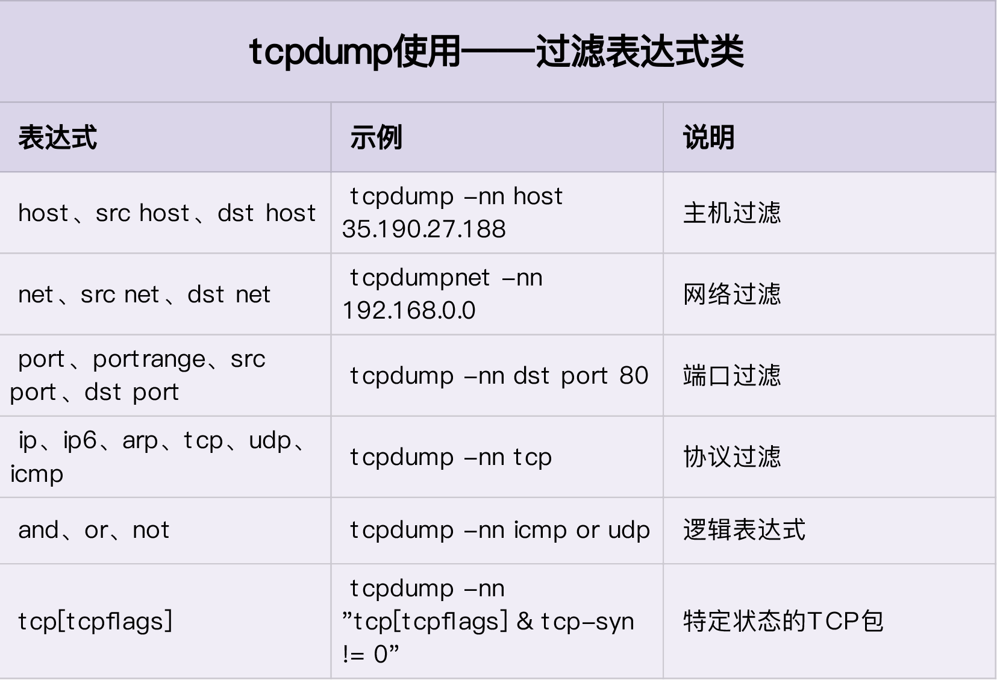
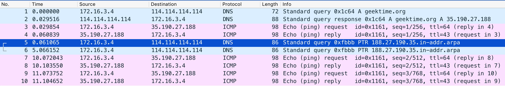
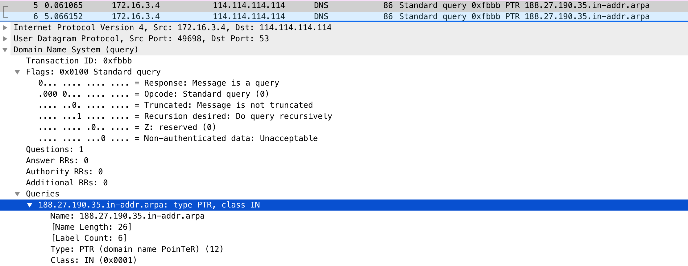
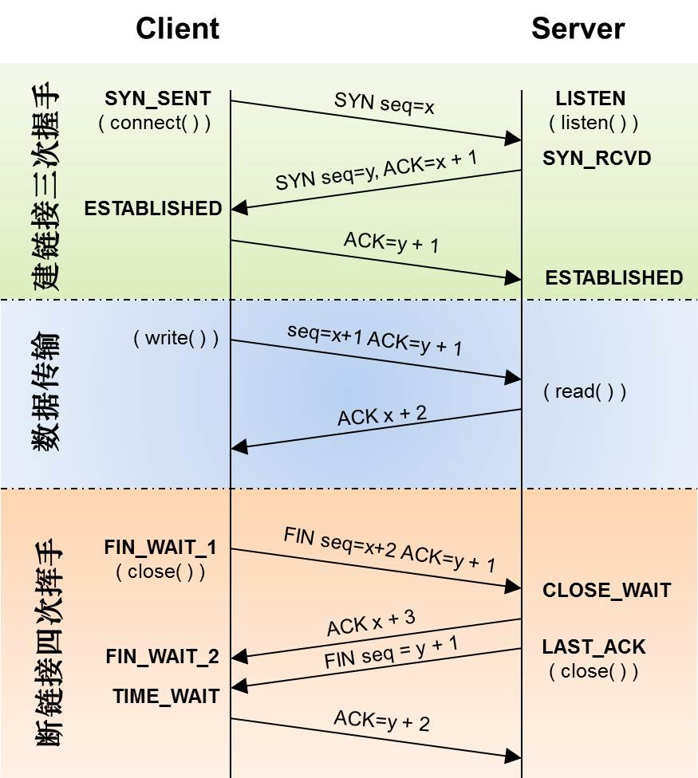

可以借助 nslookup 或者 dig 的调试功能，分析 DNS 的解析过程，再配合 ping 等工具调试 DNS 服务器的延迟，从而定位出性能瓶颈。通常，你可以用缓存、预取、HTTPDNS 等方法，优化 DNS 的性能。
tcpdump 和 Wireshark 就是最常用的网络抓包和分析工具，更是分析网络性能必不可少的利器。
- tcpdump 仅支持命令行格式使用，常用在服务器中抓取和分析网络包。
- Wireshark 除了可以抓包外，还提供了强大的图形界面和汇总分析工具，在分析复杂的网络情景时，尤为简单和实用。
$ tcpdump -nn udp port 53 or host 35.190.27.188
- -nn ，表示不解析抓包中的域名（即不反向解析）、协议以及端口号。
- udp port 53 ，表示只显示 UDP 协议的端口号（包括源端口和目的端口）为 53 的包。
- host 35.190.27.188 ，表示只显示 IP 地址（包括源地址和目的地址）为 35.190.27.188 的包。
- 这两个过滤条件中间的“ or ”，表示或的关系，也就是说，只要满足上面两个条件中的任一个，就可以展示出来。
tcpdump
tcpdump 为你展示了每个网络包的详细细节，这就要求，在使用前，你必须要对网络协议有基本了解。而要了解网络协议的详细设计和实现细节， RFC 当然是最权威的资料。


tcpdump 的输出格式:
时间戳 协议 源地址.源端口 > 目的地址.目的端口 网络包详细信息
Wireshark
Wireshark 也是最流行的一个网络分析工具，它最大的好处就是提供了跨平台的图形界面。跟 tcpdump 类似，Wireshark 也提供了强大的过滤规则表达式，同时，还内置了一系列的汇总分析工具。
拿的 ping 案例来说，你可以执行下面的命令，把抓取的网络包保存到 ping.pcap 文件中：
$ tcpdump -nn udp port 53 or host 35.190.27.188 -w ping.pcap
用 Wireshark 打开它。打开后，你就可以看到下面这个界面：

从 Wireshark 的界面里，你可以发现，它不仅以更规整的格式，展示了各个网络包的头部信息；还用了不同颜色，展示 DNS 和 ICMP 这两种不同的协议。你也可以一眼看出，中间的两条 PTR 查询并没有响应包。
接着，在网络包列表中选择某一个网络包后，在其下方的网络包详情中，你还可以看到，这个包在协议栈各层的详细信息。比如，以编号为 5 的 PTR 包为例：

你可以看到，IP 层（Internet Protocol）的源地址和目的地址、传输层的 UDP 协议（Uder Datagram Protocol）、应用层的 DNS 协议（Domain Name System）的概要信息。
继续点击每层左边的箭头，就可以看到该层协议头的所有信息。比如点击 DNS 后，就可以看到 Transaction ID、Flags、Queries 等 DNS 协议各个字段的数值以及含义。
通常看到的 TCP 三次握手和四次挥手的流程，基本是这样的：

小结
根据 IP 地址反查域名、根据端口号反查协议名称，是很多网络工具默认的行为，而这往往会导致性能工具的工作缓慢。所以，通常，网络性能工具都会提供一个选项（比如 -n 或者 -nn），来禁止名称解析。